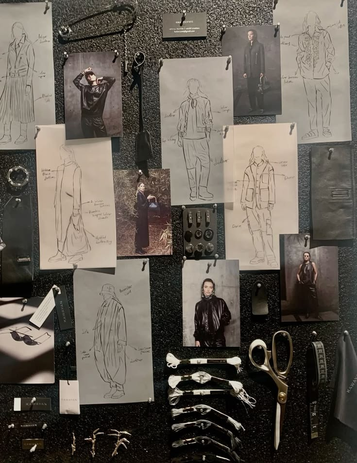
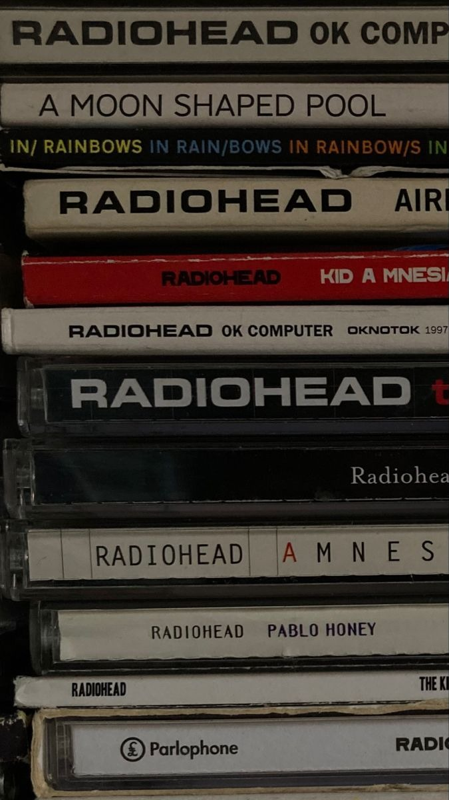

Sobre mí
¡Hola! Mi nombre es Karla, tengo 31 años y actualmente estudio la carrera de Programación y Transformación Digital. Esta es mi segunda carrera, ya que anteriormente estudié Diseño y Publicidad en Moda.
Durante mucho tiempo pensé que ambas carreras no tenían absolutamente nada que ver entre sí. Sin embargo, gracias a esta clase y a la creación de este proyecto, descubrí que estaba equivocada.
Diseñar esta página me permitió aplicar muchos de los conocimientos que adquirí durante mi primera carrera: la selección de una paleta de colores, la tipografía, la distribución de los elementos, la composición visual y el uso de acentos para crear una identidad propia.
Por eso, esta página representa algo muy importante para mí: la unión de dos partes de mi vida que creía completamente separadas, pero que hoy descubro que se complementan y forman parte de la persona que soy.
Gracias por visitar mi página. ¡Espero que la encuentres interesante! :)
Mis intereses

Second Skin
01 / Fashion
Paper Souls
02 / Literature

Sweet Dissonance
03 / Music
Habilidades
Detrás del código
Este proyecto representa mis primeros pasos en el diseño y desarrollo web. Durante su creación descubrí que programar no consiste solamente en escribir código, sino también en experimentar, resolver problemas y transformar ideas en algo funcional.
El proceso
Comencé organizando la estructura de mi página y diseñando cada sección. Experimenté con diferentes estilos, imágenes y animaciones hasta encontrar una presentación que reflejara mis ideas.
Los desafíos
Uno de mis primeros retos fue conseguir que las imágenes aparecieran correctamente. Aprendí a organizar los archivos, corregir las rutas y probar los cambios antes de publicarlos en GitHub.